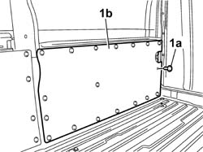
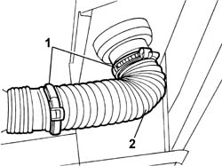
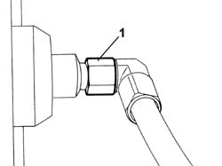
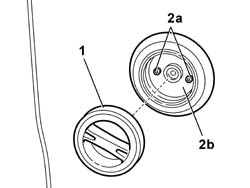

1043A30 GPL FILLER FITTING R R
- Path
- Procedures > 10 ENGINE UNIT > 1043 GPL TANK AND PIPES > 1043A GPL TANK > 1043A30 GPL FILLER FITTING R R
- Kind
- repair procedure (removal / refitting; the operation number is the code)
- Applies to
- engines: 2.0 16V; all production periods
- Interactive page
- https://sloeber94.github.io/elrnDB-fDct/en/#/244002628
Applies to: engines: 2.0 16V; all production periods
 Removing
Removing
 Refitting
RefittingDrain the section of the pipe from the LPG filler to the tank, following the instructions in the procedure:
Op. 1043A02 LPG SYSTEM LINES PIPE DRAINING OPERATIONS
Position the vehicle on the lift.
Disconnect the negative battery terminal.
1. Working from inside the load carrying compartment, release the retaining buttons (1a) and remove the left side trim (1b).

Applies to: engines: 2.0 16V; all production periods
1. Loosen the retaining bands.
2. Release the corrugated pipe protecting the LPG filler pipe.

Applies to: engines: 2.0 16V; all production periods
1. Undo the connector for the LPG filler pipe from the filler.

Applies to: engines: 2.0 16V; all production periods
1. Undo and remove the LPG filler pipe cap.
2. Undo the retaining bolts (2a) and remove the LPG filler (2b).

Applies to: engines: 2.0 16V; all production periods
Refitting
RemovingPosition the LPG filler in the housing and tighten the fixing bolts.
Working from inside the load carrying compartment, tighten the connector for the LPG filler pipe to the filler to the recommended torque.
Value daNm | Fastening | Component | Ø | |
|---|---|---|---|---|
- | 4 | Connector | M20 X 1 |
Position the corrugated pipe protecting the LPG filler pipe and tighten the retaining bands.
Tighten the LPG filler cap.
Op. 1043A04 GPL SYSTEM AND PIPES CHECK FOR LEAKS
Position the load carrying compartment left side trim using retaining buttons.
Connect the negative battery terminal.